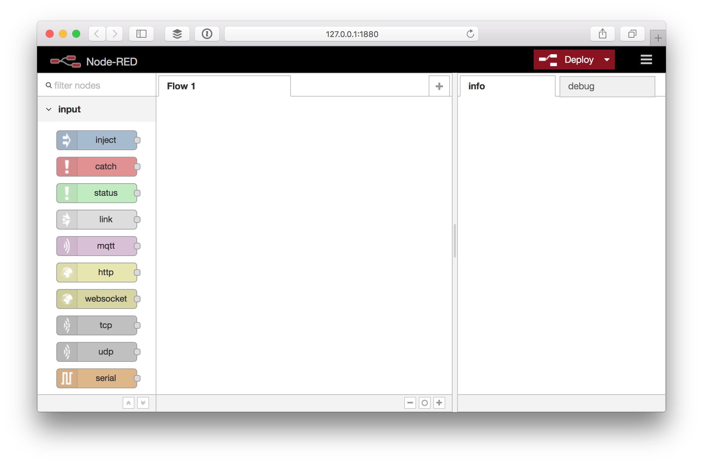
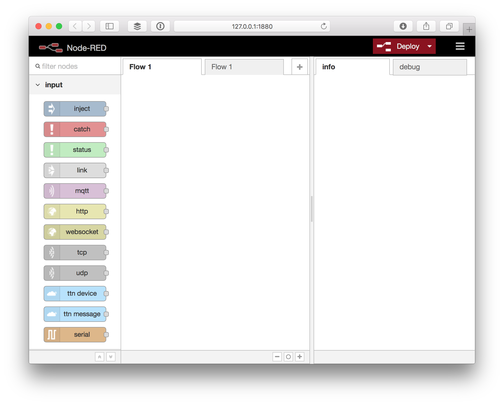
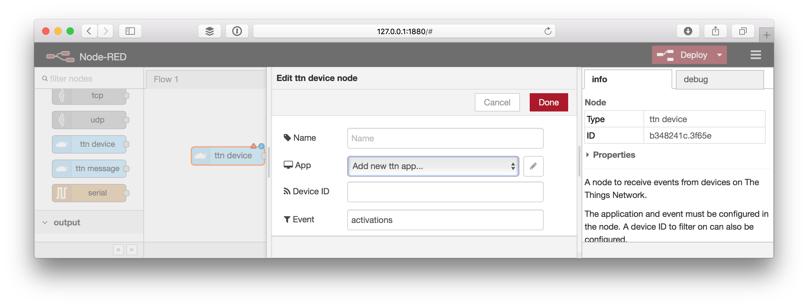
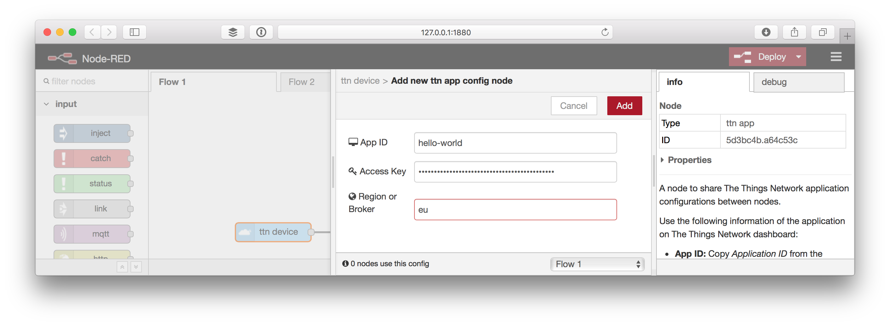
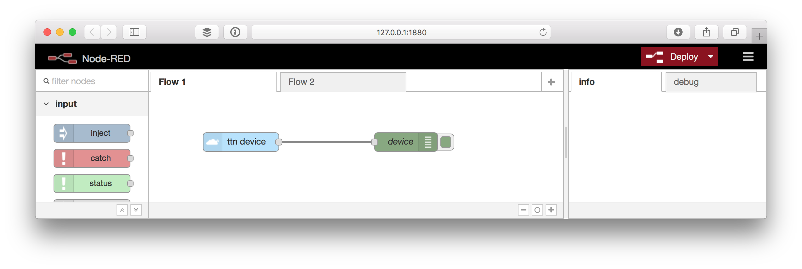
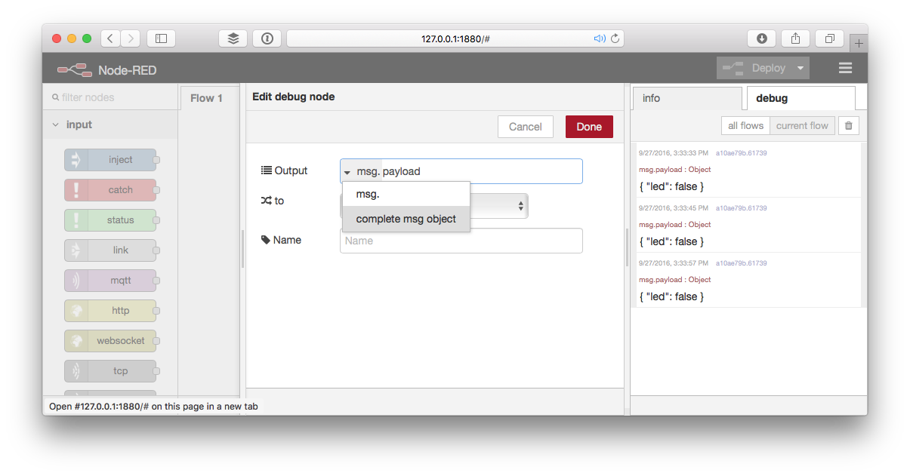
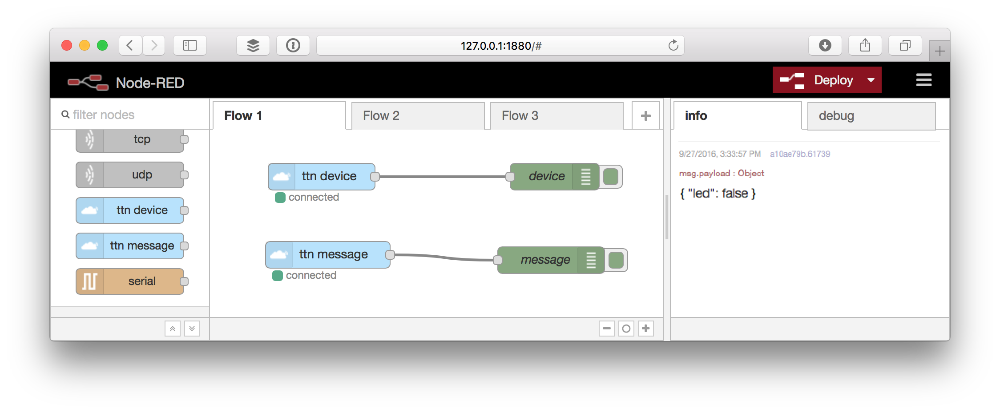
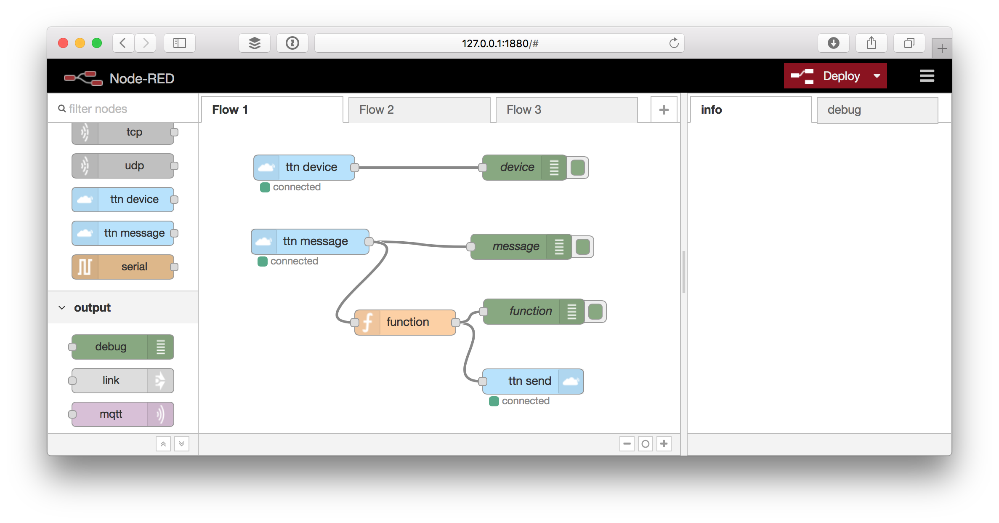

Quick Start
Outdated: this section documents The Things Network V2, which is no longer maintained. See the documentation for The Things Stack V3, or browse the V2 docs index.
This guide will walk you through setting up a Node-RED flow that listens to device activations and messages and responds with a message in return.
This guide assumes the sketch and payload functions of The Things Uno / Quick Start, but can be easily applied to any other.
The full flow that we will build is also included as example in the Node-RED library.
Setup #
To get started you need to install Node-RED and add the TTN node, both via NPM.
Node-RED #
- Make sure you have Node.js and then install Node-RED:
sudo npm install -g --unsafe-perm node-red
See Node-RED’s Getting Started / Installation for details.
- Run Node-RED:
node-red
See Node-RED’s Getting Started / Running for details.
- Spot a line like this to know what URL to open in your browser:
29 Aug 11:13:01 - [info] Server now running at http://127.0.0.1:1880/
You should see something like:

The Things Network nodes #
- Add The Things Network nodes:
cd $HOME/.node-red
npm install node-red-contrib-ttn
See Node-RED’s Getting Started / Adding Nodes for details.
- Restart (
Ctrl+Cto stop) Node-RED and refresh your browser.
You should now see several ttn nodes in the sidebar:

Configure #
All The Things Network nodes can share the same app configuration.
- Drag the ttn device node to the flow and double-click it to edit.

- Now for App either select an existing configuration or select Add new ttn app… selected and click the
✏️button.

Copy-paste the following information from your application in your console:
- For App ID, copy Application ID from the Application Overview box.
- For Access Key, scroll down to the Access Keys. For the key you’d like to use, click to show the key and then to copy it.
- For Region or Broker, scroll back again to use Handler Status from the Application Overview box. Only copy the last bit following
ttn-handler-.
- Click Add to save the configuration.
Receive Events #
Activations and other devices events can be received via the ttn device node.
- Still editing the ttn device node, enter
activationsin the Event field. - Click Add to create the node.
- Drag a debug node from the output category of the toolbox.
- Drag the output of the ttn device node to the input of the debug node.

- Click Deploy to deploy the flow.
- In the right sidebar select the debug tab.
- Restart a device by briefly disconnecting power or upload a sketch.
- Soon, you should see the activation message coming in like:
my-uno
By default the debug node only shows msg.payload, which in the case of the activations event is just the Device ID.
-
Double click the debug node to edit it.
-
Click the gray part of the Output value, select complete msg object and click Done:

-
Click Deploy to see the next message in full:
{ "app_eui": "70B3D57EF000001C", "dev_eui": "0004A30B001B7AD2", "dev_addr": "26012084", "metadata": { "time": "2016-09-08T14:04:52.755064047Z", "frequency": 868.5, "modulation": "LORA", "data_rate": "SF7BW125", "coding_rate": "4/5", "gateways": [ { "eui": "B827EBFFFE87BD22", "timestamp": 1528942955, "time": "2016-09-08T14:04:52.716713Z", "channel": 2, "rssi": -57, "snr": 7.5, "rf_chain": 1 } ] }, "dev_id": "my-uno", "payload": "my-uno", "_msgid": "10d6a2ba.ef295d" }
Receive Messages #
Messages sent by devices on the application can be received via the ttn message node.
- Drag a ttn message node from the input category of the toolbox.
- Double click the node to configure it.
- Drag a debug node from the output category of the toolbox.
- Drag the output of the ttn message node to the input of the debug node.

-
Click Deploy.
-
In the right sidebar select the debug tab.
-
Soon after a device sends a message to your application you should see it come in like this:
{ "led": false }By default the debug node only shows
msg.payload, which does not include the ID of the device that sent the message. -
Double click the debug node to edit it.
-
Click the gray part of the Output value, select complete msg object and click Done:
-
Click Deploy to see the next message in full, including
dev_id:{ "port": 1, "counter": 31, "payload_raw": { "type": "Buffer", "data": [0] }, "payload_fields": { "led": false }, "metadata": { "time": "2016-09-27T12:35:46.8640105Z", "frequency": 867.1, "modulation": "LORA", "data_rate": "SF7BW125", "coding_rate": "4/5", "gateways": [ { "gtw_id": "eui-b827ebfffe87bd22", "timestamp": 1329587859, "time": "2016-09-27T12:35:46.842692Z", "channel": 3, "rssi": -111, "snr": 6.2 } ] }, "dev_id": "my-uno", "payload": { "led": false }, "_msgid": "426db946.bd9248" }
Send Messages #
Use the ttn send node to send messages to devices.
- Drag a ttn send node from the output category of the toolbox.
- Double click the node to configure it.
We could specify a device and port to address here, but instead we’ll do this via the message that we’ll send to the node.
- Drag a function node from the function category of the toolbox and double click to configure it.
Use the following code for the function:
return {
dev_id: msg.dev_id,
port: msg.port,
payload: {
led: !msg.payload.led
}
};
- Drag the output of the ttn message node to the input of the function node.
- Drag the output of the function node to the input of the ttn send node.
- Drag a debug node from the output category of the toolbox.
- Drag the output of the function node to the input of the debug node.

- Click Deploy.
The next time your device sends a message, a message will be send in response to toggle the LED. You can use the last debug node we added to verify the message we use as input for the ttn send node is correct.
👏 You now know how to receive events and messages in Node-RED as well as how to trigger actions on that, for example by sending a message in response. Now go build something awesome and share it on labs!